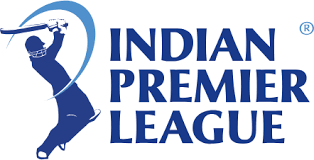
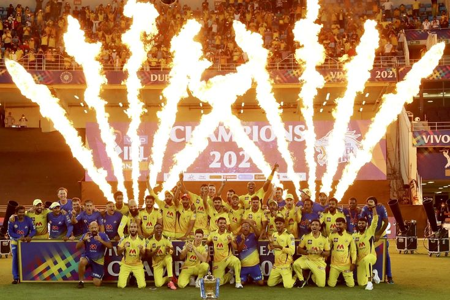
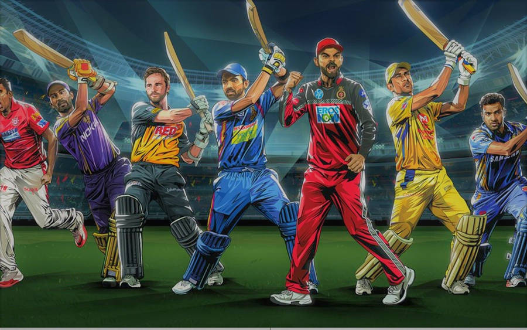

- Background
- Foundation
- Expansions and termination
The sport of cricket has a known history beginning in the late 16th century England. It became an established sport in the country in the 18th century and developed globally in the 19th and 20th centuries. International matches have been played since the 19th-century and formal Test cricket matches are considered to date from 1877. Cricket is the world's second most popular spectator sport
The "Cricket Foundation" is a term that can refer to a few different organizations. One is the charitable arm of the England and Wales Cricket Board (ECB) focused on grassroots and youth cricket, which later became Chance to Shine. Another is the McGrath Foundation, an Australian breast cancer support and education charity founded by Glenn and Jane McGrath. Additionally, there's the Cricket Live Foundation
Cricket has seen numerous expansions and terminations of tournaments, teams, and rules throughout its history. Key examples include the expansion of the T20 World Cup to 20 teams in 2024, the evolution of fielding restrictions in One Day Internationals (ODIs), and the introduction and subsequent revision of the "handled the ball" dismissal law


- Tournament format
- Player acquisition,suad composition and salaries
- Match rules
- Prize money
Cricket tournament formats vary, but commonly include group stages followed by knockout rounds (semi-finals and finals), or single-elimination (knockout) brackets. Some tournaments, like the Cricket World Cup, have a round-robin group stage where each team plays every other team in their group.
In professional cricket, player acquisition, squad composition, and salaries are governed by specific rules and mechanisms, often detailed in league regulations or team-specific policies. Player acquisition typically involves auctions or player drafts where teams bid for players, considering factors like talent, experience, and market value. Squad composition refers to the strategic selection of players to form a balanced and competitive team, taking into account roles, skills, and team dynamics. Salaries are determined through negotiations, often within a defined salary cap system, which limits the total amount teams can spend on player wages.
In cricket, match rules vary based on the format (Test, ODI, T20, etc.), but generally involve two teams of eleven players, with the objective of scoring more runs than the opposing team.
The Indian Premier League (IPL) is a professional Twenty20 (T20) cricket league in India, organised by the Board of Control for Cricket in India (BCCI).[1] Founded in 2007, it features ten city-based franchise teams

- Current teams
- Defunct teams
- Timeline
The term "teams" in cricket can refer to national teams, domestic teams, or franchise teams. Examples include the 12 Test-playing nations (full members of the ICC) like Australia, England, and India.
Several cricket teams, both at the domestic and international level, have become defunct over time. These teams may have ceased to exist due to various reasons, including mergers, disbandment, or changes in the structure of cricket leagues.
Cricket has a long history, starting in England in the 16th century and becoming the national sport in the 18th century. International matches began in the 19th century, with formal Test matches dating back to 1877. The sport was introduced to India in the 17th and 18th centuries and has since become deeply ingrained in the country's culture.
-

- Performance in the IPL by title
- IPL season results
In the Indian Premier League (IPL), Mumbai Indians and Chennai Super Kings have been the most successful teams, each winning five titles. Kolkata Knight Riders have won three titles, while Rajasthan Royals, Deccan Chargers, Sunrisers Hyderabad, and Gujarat Titans have each won one.
The Indian Premier League (IPL) is an annual Twenty20 cricket tournament held in India. The most successful teams are Mumbai Indians and Chennai Super Kings, each with five titles. Kolkata Knight Riders have won three titles. Other teams with one title each include Rajasthan Royals
-

- League stage position
n the IPL league stage, teams compete in a round-robin format, playing each other twice (home and away). The top four teams based on points (and sometimes Net Run Rate) then advance to the playoffs.